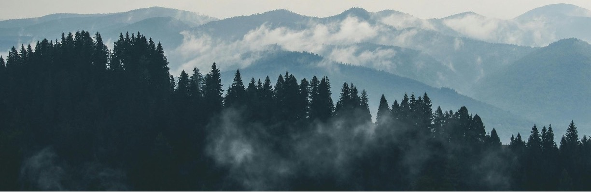

РГКП «Казахское лесоустроительное предприятие» Комитета лесного хозяйства и животного мира Министерства экологии и природных ресурсов РК

"Воспроизводство лесов имеет определяющее значение для сохранения
экологического равновесия и дальнейшего устойчивого социально-экономического прогресса страны."
Глава Государства